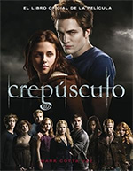
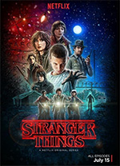
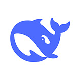

 |
O FENÔMENO INTERNACIONAL CRIADO POR STEPHENIE MEYER AGORA É UM GRANDE FILME! Explore os bastidores da produção de Crepúsculo, a história cativante que já encantou milhões de leitores. Através de imagens inéditas, entrevistas exclusivas e anedotas, Mark Cotta Vaz nos leva aos bastidores com a diretora Catherine Hardwicke, os produtores e os cenógrafos para vivenciar em primeira mão a recriação do incrível mundo de Meyer. Você descobrirá detalhes como o brasão da família Cullen e os segredos por trás de algumas das cenas mais dramáticas. E verá como um vampiro brilha à luz do sol… |
 |
Stranger Things éUma série de drama e terror de ficção científica aclamada pela crítica, criada pelos irmãos Duffer para a Netflix.Ambientada na cidade fictícia de Hawkins, Indiana, na década de 1980, a narrativa acompanha um grupo de amigos que descobre uma série de mistérios extraordinários envolvendo experimentos secretos do governo, forças psicocinéticas e uma dimensão alternativa aterrorizante conhecida como Mundo Invertido. A série inovadora encerrou sua trajetória no final de 2025, completando 5 temporadas e 42 episódios. |
"All I Want for Christmas Is You" é um clássico natalino e uma canção de amor animada. A narradora declara que não se importa com presentes ou luzes de Natal; o melhor presente que ela pode ter é estar com quem ama. Lançada em 1994 como o primeiro single do primeiro álbum natalino de Mariah Carey e seu quarto álbum de estúdio, Merry Christmas , a canção se tornou um clássico do Natal. Alcançou o status de Diamante nos EUA com mais de 16 milhões de cópias vendidas. Vendeu mais de 40 milhões de cópias em todo o mundo, incluindo vendas digitais e streams desde sua estreia, tornando-se um dos singles mais vendidos de todos os tempos. |
O Apple Podcasts é um aplicativo de streaming de áudio e vídeo gratuito e pré-instalado, desenvolvido pela Apple Inc. para dispositivos iOS, iPadOS, macOS e watchOS.Permite descobrir, transmitir, baixar e assinar milhões de programas em todo o mundo. |
Uma nova era do survival horror chega com Resident Evil Requiem, o capítulo mais recente e imersivo da icônica série Resident Evil. Vivencie o terror do survival horror com a analista do FBI Grace Ashcroft e mergulhe na ação de tirar o fôlego com o lendário agente Leon S. Kennedy. As duas jornadas e estilos únicos de jogo se entrelaçam em uma experiência eletrizante que vai gelar sua espinha. |
 |
DeepSeek é uma startup chinesa de inteligência artificial fundada em 2023 por Liang Wenfeng que se tornou mundialmente conhecida por desenvolver modelos de linguagem de grande escala (LLMs) de pesos abertos de altíssimo desempenho com custos de treinamento incrivelmente baixos. A empresa nasceu a partir de um laboratório de pesquisa da High-Flyer, uma das maiores gestoras de fundos de hedge quantitativos da China. |